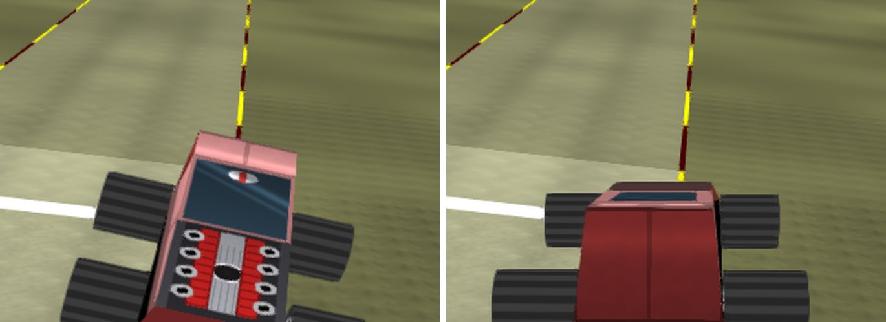
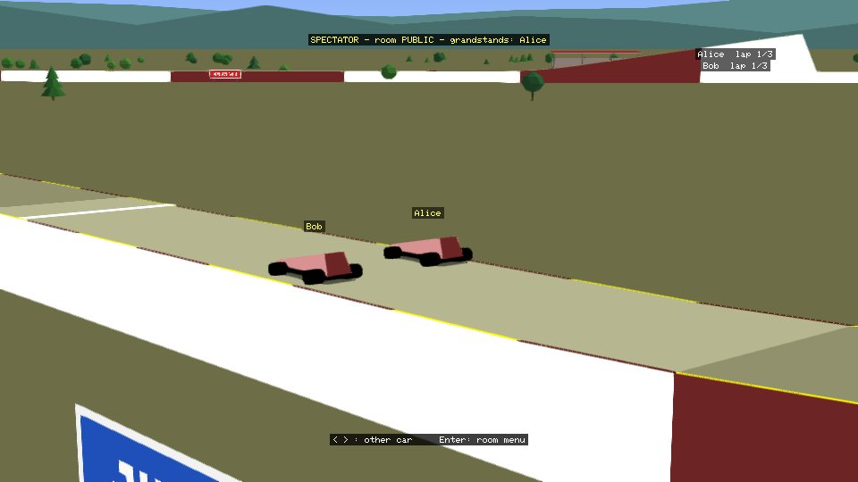

Stunt Car Racer – native PC version
An open-source PC version of Stunt Car Racer (Geoff Crammond, Micro Style, 1989, Atari ST): the original game runs exactly as it was, with an HD mode, online multiplayer for up to 6 players and spectators in the grandstands.
.st file), which you place in the DISK folder next to scr.exe.

Features
- The original game, unchanged: the Atari ST program is run by a 68000 CPU emulator (Musashi), with the original physics, tracks and menus.
- HD mode (F8): 1920×1080, 16:9, smooth picture; the 3D scene is redrawn in high definition by the graphics card (OpenGL 3.3) or the processor, with sky, scenery, grandstands and crowds, shadows, sparks and smoke.
- Sound: emulated YM2149 sound chip, optional realistic V8 engine, crowd cheering with Doppler effect.
- Online multiplayer: two-player races, a public room, private rooms and multi-car races of 2 to 6 players through a relay server; chat and horn.
- Spectators: players who are out, and players in a room who are not racing, watch the race from the grandstands.
- Local network play (Computer Link over the network), gamepad support, redefinable keys, English and French.
- Relay server for Windows and Linux, with a live status web page, also usable behind an HTTPS reverse proxy (WebSocket).
Play in your browser
Open the browser version, choose your .st disk image (it stays in your browser and is kept for your
next visits) and press Play. Nothing to install; online multiplayer works there too. The HD mode is drawn by the processor in the
browser: the Windows version is smoother.
Download and install
- Download
StuntCarRacer-win64-vNN.zipfrom the latest release and unzip it. - Put your Stunt Car Racer disk image (
.st) in theDISKfolder. - Double-click
scr.exe. F1 opens the options menu (language, sound, HD, scenery…).
To host your own relay server, use ServeurRelaisStuntCar-vNN.zip (Windows and Linux); see README_SERVER.txt inside.
Each release lists the SHA-256 checksums of its files.
Building from source
Linux, macOS or Windows with CMake 3.16+ and SDL2:
cmake -S native -B native/build && cmake --build native/build --config Release native/build/scr Stunt_Car_Racer.st
The Windows release files are built by GitHub Actions from this repository with native/build_release.sh
(workflow).
Code signing policy
Free code signing provided by SignPath.io, certificate by SignPath Foundation.
- Only the programs built from this repository by GitHub Actions are signed:
scr.exe,scr_headless.exeandscr_relay.exe. - Committers and reviewers: Popov2026
- Approvers: Popov2026 — every signing request is approved manually.
Privacy policy
This program will not transfer any information to other networked systems unless the player uses online multiplayer:
- At start-up and in the Online Multiplayer menu, the game asks the relay server (the official one, or the one set in
scr.ini) which version is current. - During online play it sends the nickname chosen by the player, the game version, the car positions and the chat messages; the relay forwards them to the other players. Nicknames and room codes also appear on the server's status page.
- There is no account and no personal data is collected. The relay server keeps a log of connections (IP address, nickname) on the machine that runs it.
- Local network play talks only to the other player's PC.
License
The code of this project is released under the MIT license. Stunt Car Racer itself (© Geoff Crammond / Micro Style, 1989) is not included. Third-party components: Musashi (MIT), SDL2 (zlib).
En français
Version PC open source de Stunt Car Racer (Atari ST, 1989) : le jeu d'origine tel quel, un mode HD, le multijoueur en ligne
jusqu'à 6 joueurs (salle publique, salles privées) et des spectateurs dans les tribunes. Aucune donnée du jeu n'est fournie : placez votre
propre image disque .st dans le dossier DISK. Téléchargement :
dernière version. Le jeu est en anglais, avec le français au choix
dans le menu d'options (F1). Les programmes sont signés gratuitement par SignPath Foundation ; le jeu ne contacte le serveur relais que pour
le multijoueur en ligne (voir la politique de confidentialité ci-dessus).